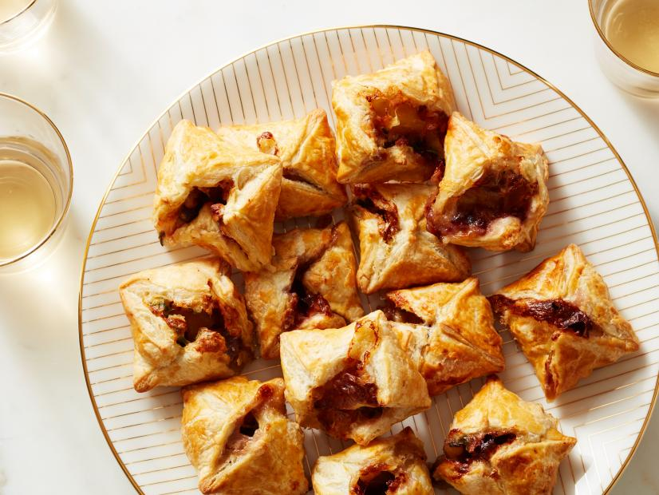

Cranberry Brie Bites Recipe

What are Cranberry Brie Bites?
Baked Brie gets dressed up for the holidays, stuffed into little golden parcels of puff pastry, along with a hit of cranberry sauce and the crunch of walnuts.
Ingredients
- 1 large egg
- One 8-ounce wheel Brie
- One 17.25-ounce package frozen puff pastry (2 sheets), thawed
- All-purpose flour, for dusting
- Grilled shrimp
- 1/3 cup whole-berry cranberry sauce
- 1/4 cup walnuts, finely chopped
- 1 tablespoon fresh thyme leaves
How to make Cranberry Brie Bites in 6 easy steps
-
Preheat the oven to 425 degrees F and line 2 baking sheets with parchment paper.
-
Whisk together the egg with 1 tablespoon of water in a small bowl for an egg wash. Cut the side rind off the Brie, then cut the Brie into 32 even pieces. Set aside.
-
Unfold a puff pastry sheet on a lightly floured surface. Roll out into a 13-inch square. Cut into 16 squares. Repeat with the second sheet so you have 32 squares total.
-
Top a pastry square with about 1/2 teaspoon cranberry sauce, 1/4 teaspoon walnuts, a piece of Brie and a pinch of thyme.
-
Use your finger or a pastry brush to brush the edges of the pastry square with egg wash until lightly coated and tacky. Pinch 2 opposite points together, then pinch the remaining 2 points together so that you have a little package. Repeat with the remaining
pastry squares and filling.
-
Transfer the pouches to the prepared baking sheets and brush with the remaining egg wash. Bake until puffed and golden brown, 15 to 20 minutes. ENJOY 😋